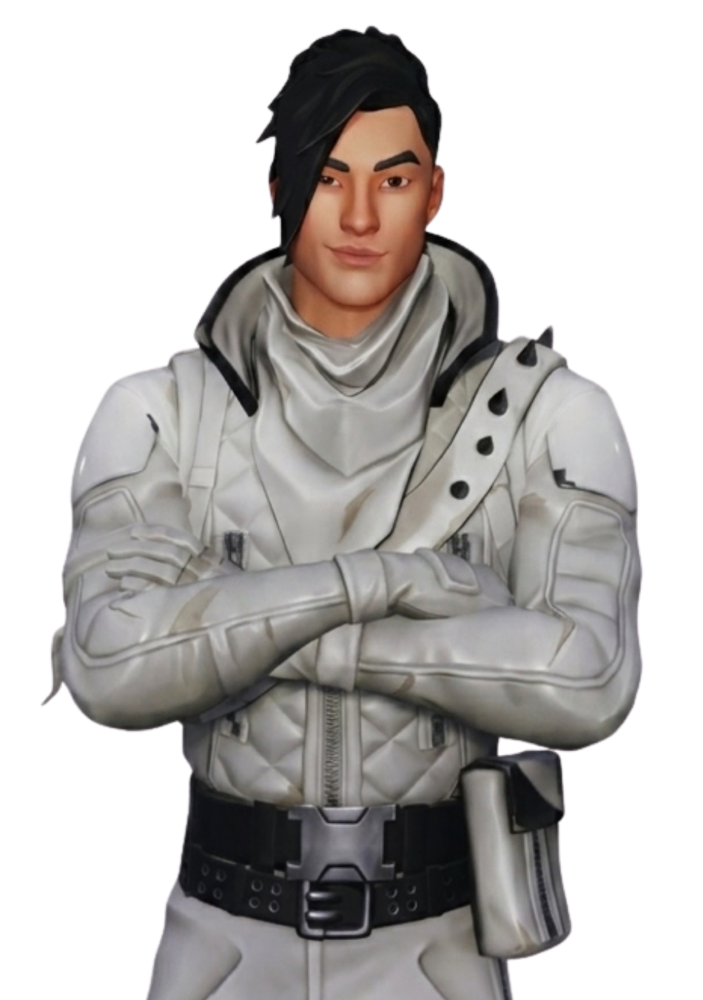
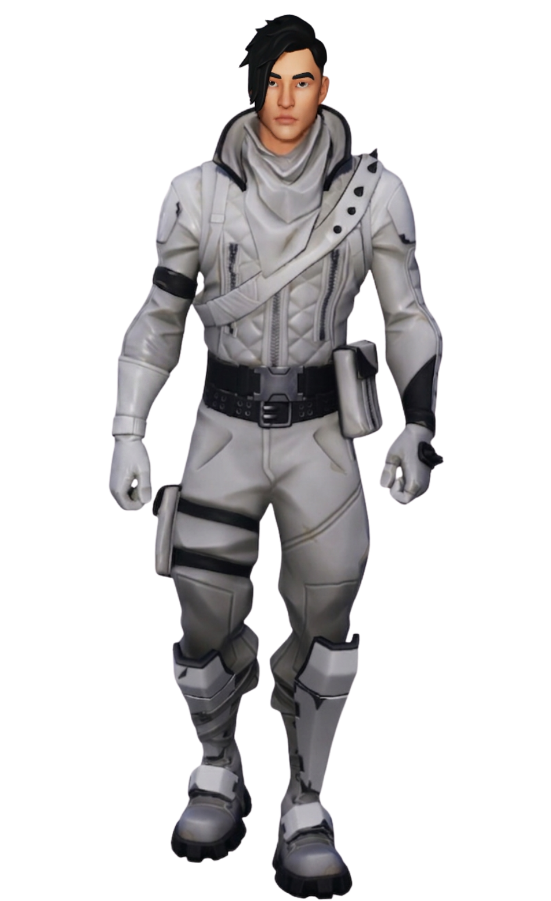
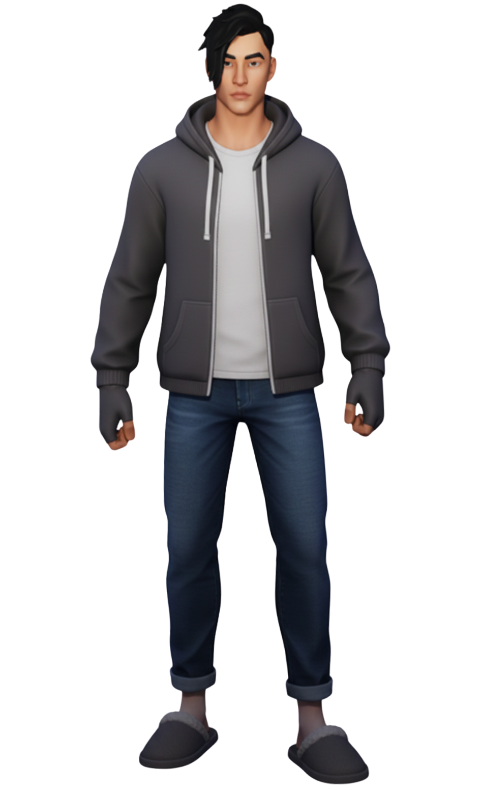
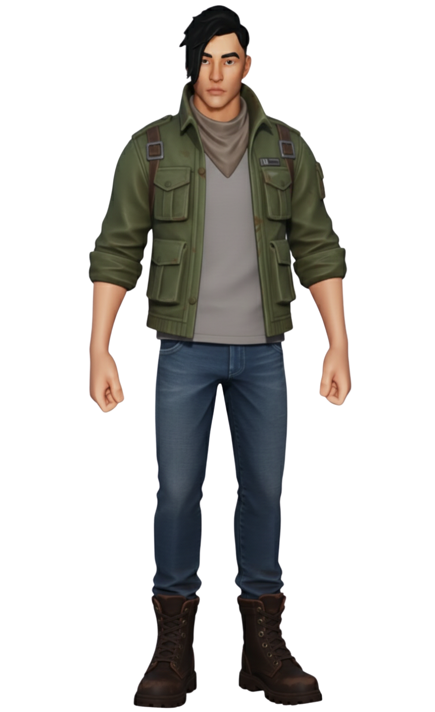
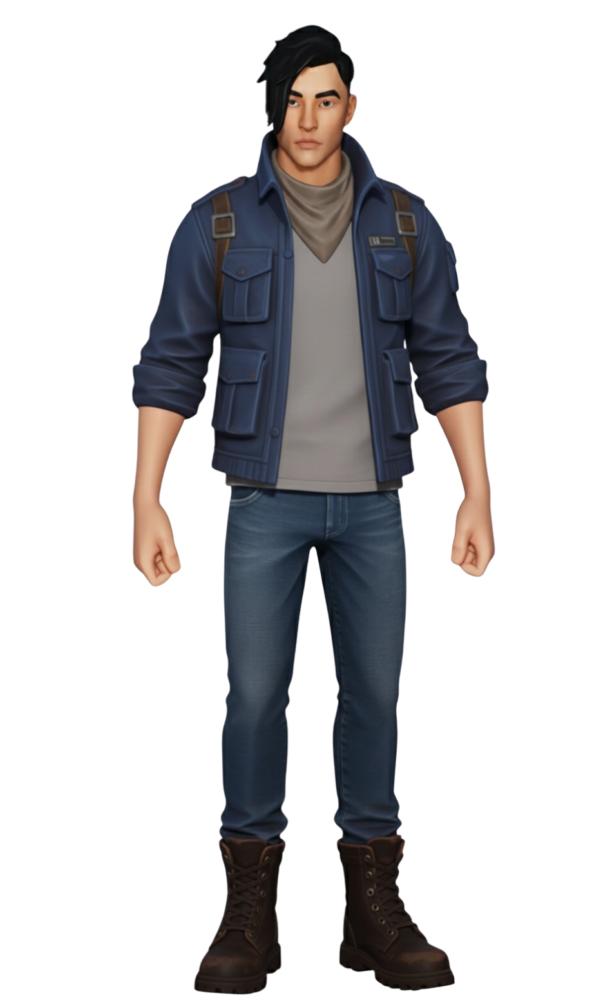
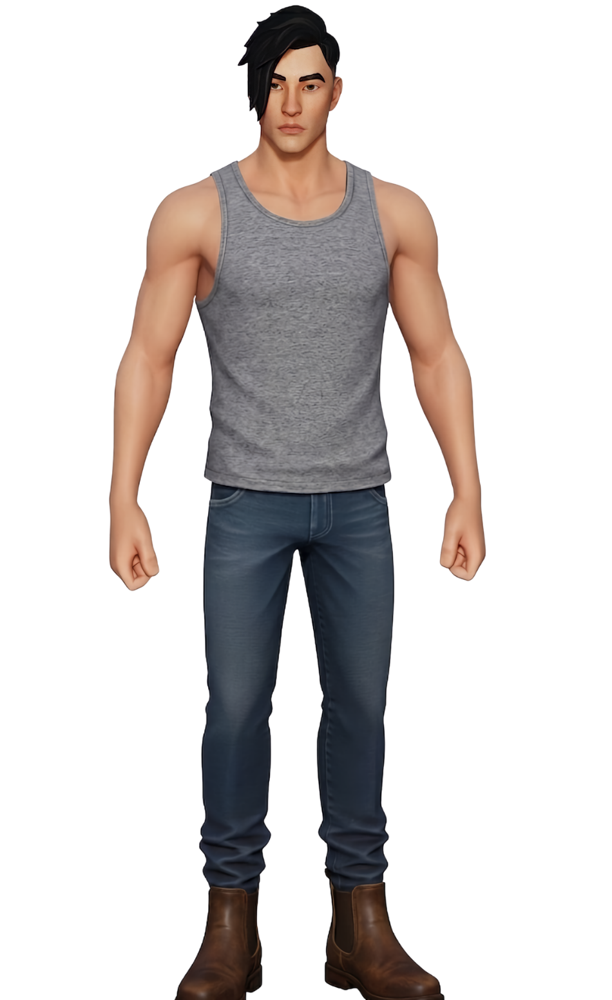
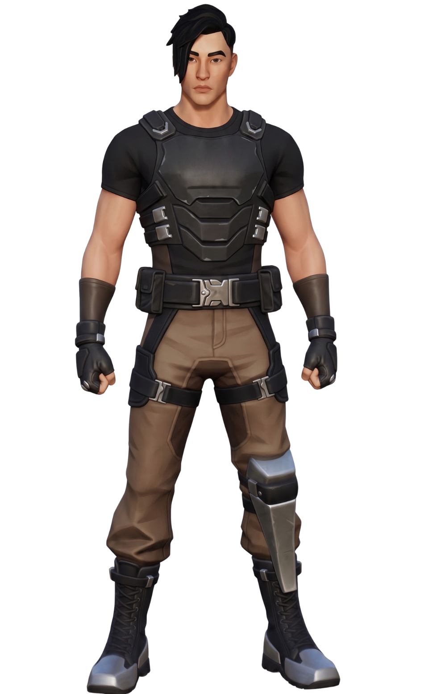

Léo
// Archives Biographiques
L'Étoile Montante de Fontainewood
Jeune acteur de la Côte Dorée et petit frère de Damian, Léo a vu sa réalité anéantie par une invasion extraterrestre. Échoué sur Astéria avec son aîné, ce garçon à la fois sarcastique et sensible, reconnaissable à sa veste en cuir blanche et sa mèche rebelle, a rejoint le Clan du Soleil. Profondément touché par l'héroïsme de Scarlet, avec qui il tisse un lien sincère, il lui offre un plastron d'armure avant la bataille finale. Lorsque la destruction du Temple Zéro fracture leur monde, Léo est brutalement arraché à son frère. Désormais à la dérive dans le vide spatial aux côtés de Scarlet, Loper et Raptor, il ravale ses larmes et sa propre terreur pour tenter de rassurer ses camarades face à l'inconnu.
// Variantes Visuelles





